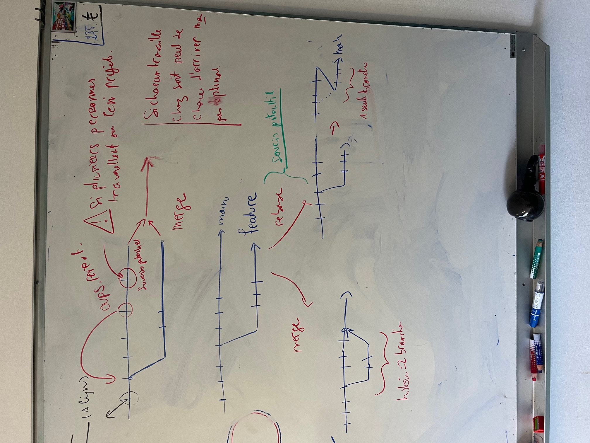

Gestion des source et site do-it
- enseignement
- ECM
Ce cours introductif ne présuppose aucune connaissance informatique spécifique (à part les acquis du tronc commun, c'est à dire vraiment pas grand chose).
Le but de ce cours est que vous puissiez :
- comprendre la problématique de la gestion des sources
- gérer efficacement un projet à plusieurs
- contribuer au parcours Do_It
Gestion des sources ?
Pourquoi
- introduction à la gestion des sources
- pourquoi ?
- Pour ne plus avoir peur d'avancer et de tester ; et pour le travail en groupe
- https://www.atlassian.com/fr/git/tutorials/why-git
- pour qui ? Tout le monde ! C'es un cadeau fait par les informaticiens au monde. Ne le salopez pas comme la gestion de projet agile...
- histoire :
- pourquoi ?
- Travailler sur un projet
- 1 personne :
- modification linéaire (temporelle d'un fichier)
- si erreur ou avancée non pertinente, il faut pouvoir revenir en arrière.
- Garder un backup de tous le projet n'est pas optimal :
- on peut revenir trop en arrière si on ne sauve pas assez souvent
- on prend trop de place si on sauve tout trop souvent
- on ne se souvient plus trop ce qu'on a modifié
- on ne peut pas tester plusieurs choses différentes en parallèle
- solution :
- ne sauver que ce qui est modifié
- marquer chaque modification d'un résumé du travail effectué
- faire de branches
-
TBD faire des schémas 
- On ne peut pas faire ça a la mimine. Il faut un logiciel qui gère tout ça.
- gestion des branches
- des logs
- des fusions (merge et rebase)
- Garder un backup de tous le projet n'est pas optimal :
- plusieurs personnes :
- ajout de complexité :
- plusieurs versions d'un projets
- plusieurs personnes qui travaillent sur le même fichier
- travail asynchrone entre les personnes. Une personne va avancer à un endroit pendant qu'une autre travaille sur autre chose
- reprendre un projet
- mauvaise solution :
- ajouter des règles : ce ne sera jamais ok et sclérosera l'ensemble. On fera des règles parce que'elle sont facile à vérifier pas parce qu'elle sont utiles (voir l'administration).
- un superviseur général qui doit tout valider avant. Il va y avoir de gros bottleneck et va ralentir tout le process : on ne mets à jour que tous les mois, ...
- bonne solution :
- environnement distribué
- branches
- ajout de complexité :
- 1 personne :
Comment
On utilise git et github pour montrer comment tout ça fonctionne. On fera ça sur un projet existant : le projet do-it.
- création d'un compte github
- Ajout en tant que collaborateur
- utilisation de l'application desktop pour télécharger le projet.
- Analyse du projet :
- fichiers
- compilation
- visualisation en local
- contribuer
Le site Do_It
Faire des modifications en local
TBD : prendre un cobaye et utiliser son ordi pour le montrer à tous.
- fait son home et vérifie en local que c'est ok.
- voir les ajouts en local et continuer jusqu'à ce que tout se compile bien.
- commit
Envoyer ses modifications sur le serveur
TBD faire en sorte que ce soit bien un rebase
- pull
- push
TBD simuler un merge
À faire chez soit
- suivre le cours desktop pour faire un nouveau projet ce qui vous apprendra les principales actions de la gestion des sources.
- ajouter ses pok et mon du temps 1.
Pour aller plus loin
Continuez le cours suivant, au moins la partie où l'on crée et gère des projets uniquement avec le site github :
Et si vous voulez faire de l'informatique, faites la suite du cours et faite toute la gestion de projet git au terminal. Vous aurez plus de contrôle sur ce que vous faites.
TBD :
- histoire de la gestion des sources à étoffer et à mettre en perspective
- résumé des différentes actions à effectuer pour que tout se passe bien